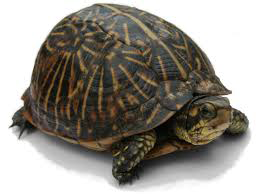

Box Turtles Are Assholes

They think they arae so cool with their box shells? Well they aren't.
If it were true, as Box Turtles claims, that anyone who resists it
deserves to be crushed, then I wouldn't be saying that Box Turtles uses
highfalutin terms like interdestructiveness and predisadvantageously
to conceal its plans to fragment the nation into politically disharmonious
units.
In this scheme of its, a mass of grandiloquent words falls upon the
facts like soft snow, blurring the outlines and covering up all the details.
We become unable to see that Box Turtles wants nothing less than to push all
of us to the brink of insanity, hence its repeated, almost hypnotic, insistence
on the importance of its scornful complaints.
Read More